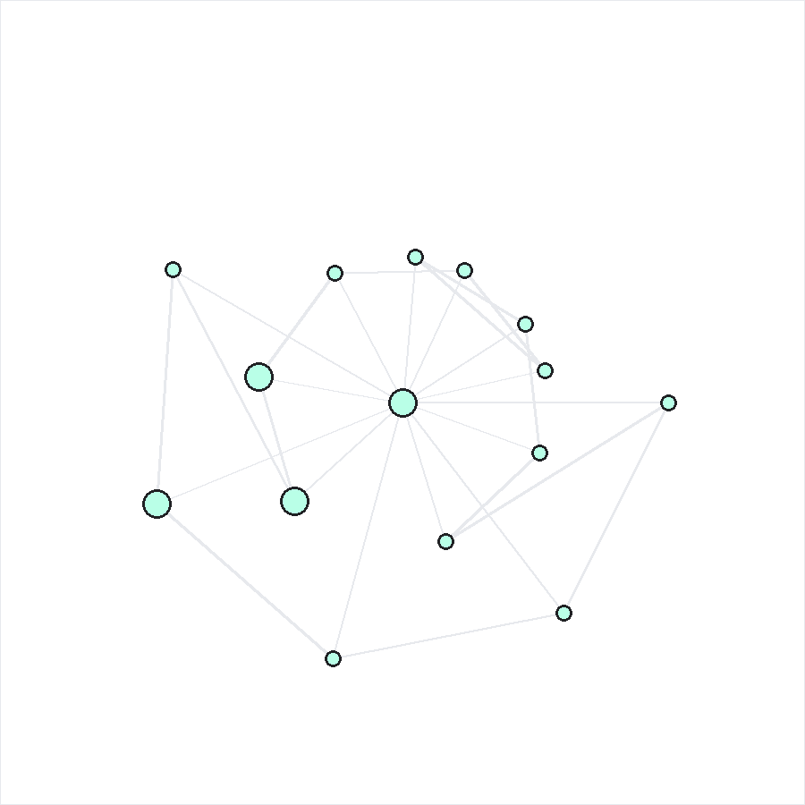
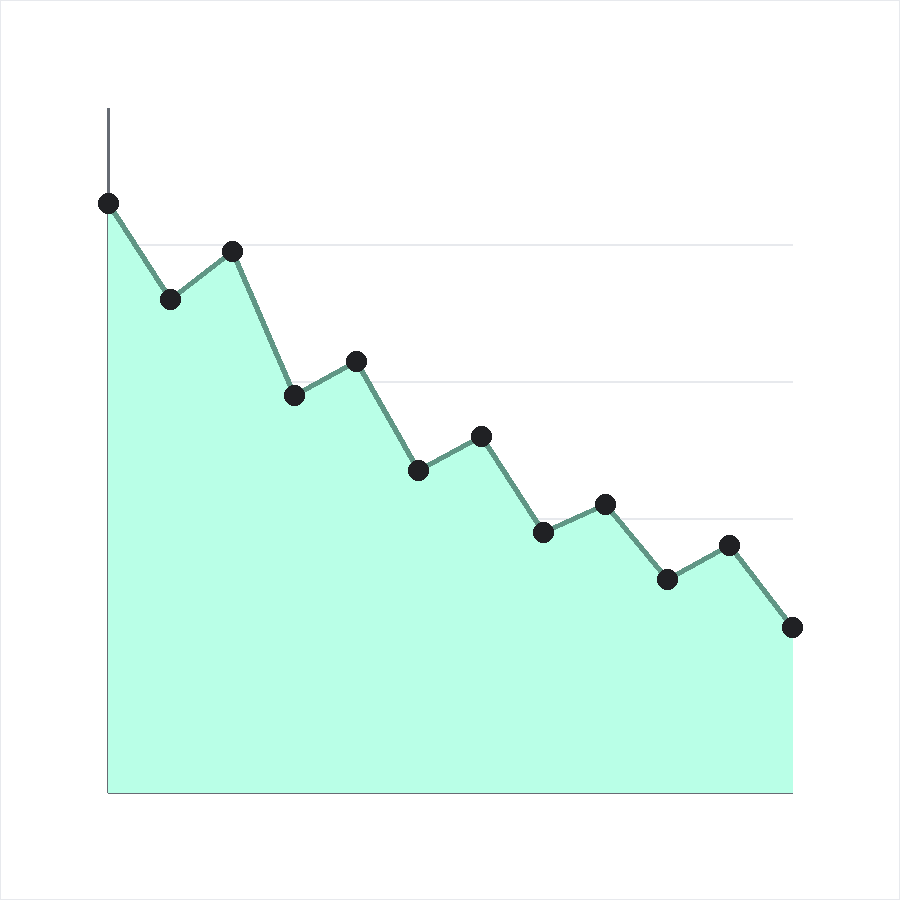

Visualization · 2023
Every visualisation in one feed, newest first. The gallery holds the graphics themselves — the rest of the site's work is listed on Publications, Data and Coordination.

Visualization · 2023

Visualization · 2020